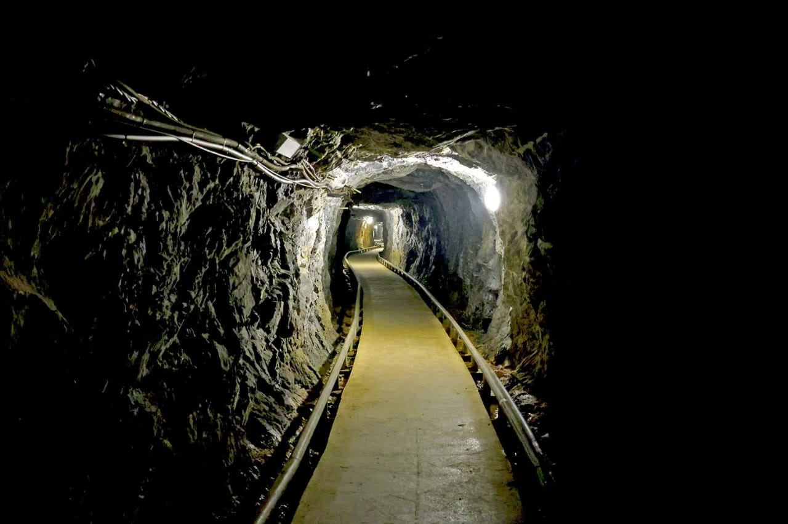
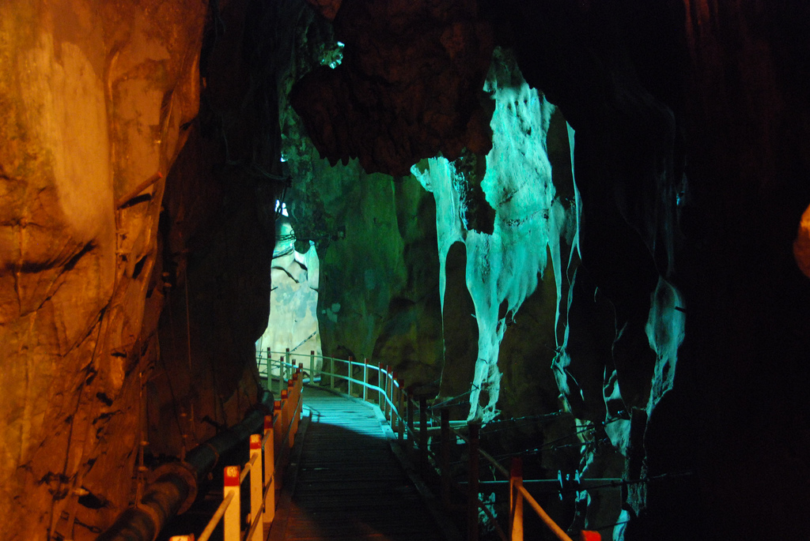
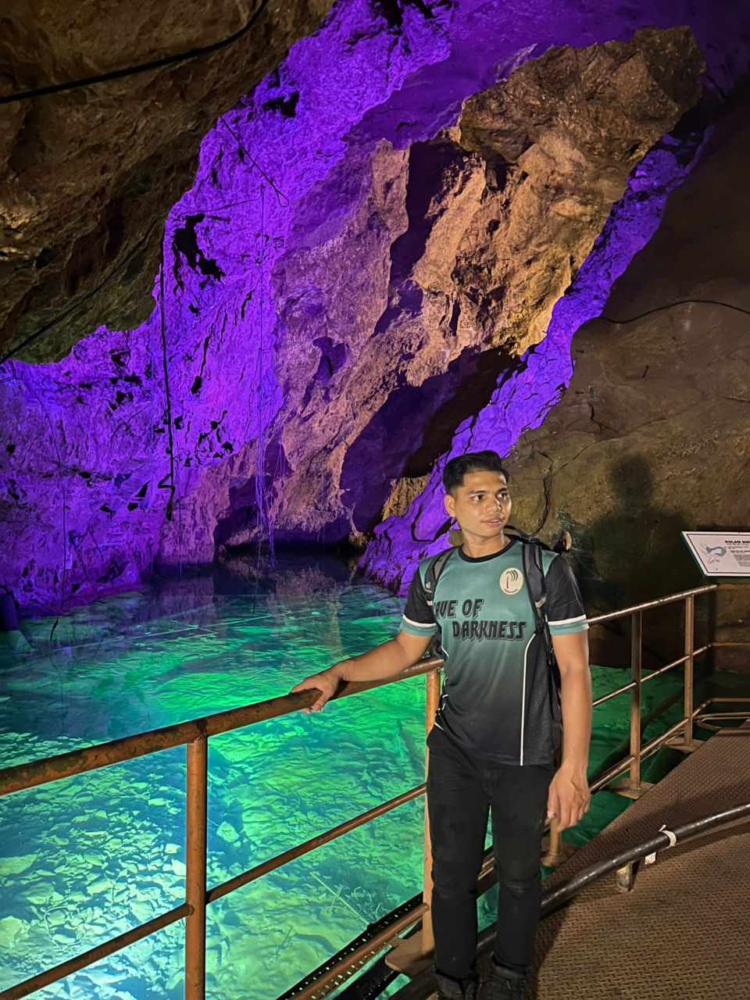
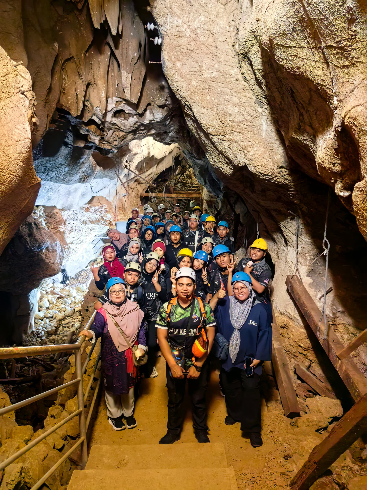

About Gua Kelam
A little biography about Encik Azim




Located amongst the limestone caves in Perlis, Gua Kelam is one of the many caves famous for its cave walks. The name Gua Kelam can be translated to “Cave of Darkness”. Located in the Wang Mu Forest Reserve, which stretches over 2,000 hectares, Gua Kelam is divided into two main sections; Gua Kelam 1 and Gua Kelam 2.
Gua Kelam is open from Monday to Friday from 9:00 AM to 5:30 PM and on Saturday and Sunday from 9:00 AM to 6:00 PM.
Gua Kelam was once known to be the place where tin mining took place. In the olden days, workers worked within the caves to recover tin that was found within its walls. The name Gua Kelam was also given due to the cave’s pitch-black darkness. Tin miners used to carry carbide lamps around to help them see while carrying out their daily tasks in the cave.
Today, visitors are not required to carry any lamps because there is now sufficient lighting throughout the cave to provide a safer and more comfortable experience for tourists.
Located amongst the limestone caves in Perlis, Gua Kelam is one of the many caves famous for its cave walks. The name Gua Kelam can be translated as “Cave of Darkness”. Located in the Wang Mu Forest Reserve, which stretches over 2,000 hectares, Gua Kelam is divided into two main sections; Gua Kelam 1 and Gua Kelam 2.
Who is Encik Azim?
Muhammad Nor Azim began his career on 2 February 2019. Throughout his years of service, he has gained valuable experience in guiding tourists, ensuring visitor safety, and sharing knowledge about Gua Kelam.
Encik Azim has extensive experience as a cave explorer. He regularly explores caves and natural environments, and has even stayed inside caves during some of his exploration activities. His knowledge and skills were developed through years of cave exploration before joining Gua Kelam, Perlis as a forest guide. Encik Azim is an adventurous individual who enjoys exploring caves and experiencing nature. Cave exploration is also one of his hobbies, and he enjoys taking risks while learning more about the natural environment. His passion and adventurous spirit inspired him to work closely with cave tourism activities in Perlis. Encik Azim is a nature enthusiast and dedicated forest guide based in Gua Kelam, Perlis. He is known for his strong interest in eco-tourism and his commitment to sharing the beauty of natural heritage with visitors. With a friendly and approachable personality, he is able to connect well with people from different backgrounds, making every tour experience more enjoyable and informative. In his daily life, he enjoys simple Malaysian food such as nasi goreng kampung, nasi lemak, and local kuih. He also likes drinking coffee during his breaks after guiding tourists, as it helps him stay refreshed and focused. During his free time, he prefers quiet activities such as relaxing in nature, exploring nearby green areas, and spending time with friends and family. He is also passionate about environmental preservation and believes in the importance of protecting natural sites for future generations. His lifestyle reflects a simple and grounded personality, which matches his role as a forest guide. His dedication and love for nature continue to make him an important figure in promoting Gua Kelam as a unique eco-tourism destination in Malaysia.
Furthermore, Gua Kelam, Perlis is managed under the state government. The state government has entrusted Encik Azim with the responsibility of taking care of the cave and ensuring visitors’ safety. Gua Kelam is divided into several cave sections. Gua Kelam 1 is the main tourist attraction, while Gua Kelam 2 consists of two tracks known as the Wet Track and Dry Track. Another section is Gua Kelam 3, and there are future plans to develop Gua Kelam 4.
Besides Gua Kelam, Perlis is also known to have approximately 83 caves throughout the state, making it one of the unique destinations for cave exploration and eco-tourism activities in Malaysia.
Gua Kelam is open from Monday to Friday from 9:00 AM until 5:30 PM, while on Saturdays and Sundays it operates from 9:00 AM until 6:00 PM.
In the past, Gua Kelam was widely known as a tin mining area where miners worked within the cave to collect tin ore hidden inside the cave walls. Due to the cave’s extreme darkness, miners used carbide lamps to help them carry out their daily work safely. Today, visitors no longer need to bring lamps because the cave has been equipped with proper lighting facilities for a safer and more comfortable experience.